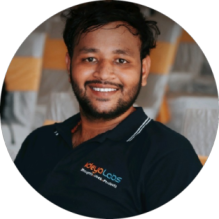

|  | Abhishek KodakandlaFrontend Developer of the Abhishek Personal Site Mobile Number:- 9848074574 Email id:- kodakandlaabhishek@gmail.com |
To have a growth oriented and challenging career, where I can contribute my knowledge and skills to the organization and enhance my experience through continuous learning and teamwork.
| COURSE | BOARD | INSTITUTES | YEAR OF PASS | PERCENTAGE |
| Btech(Mechanical Engineering) | JNTU Hyderabad | Christu jyothi institute of technology and science | 2020 | 99 |
| DIPLOMA(Mechanical Engineering) | State board of technical education and science | Talla padmavathi institute | 2017 | 98 |
| 10 th Class | Secondary School Certificate | Brillant grammer high school | 2014 | 97 |